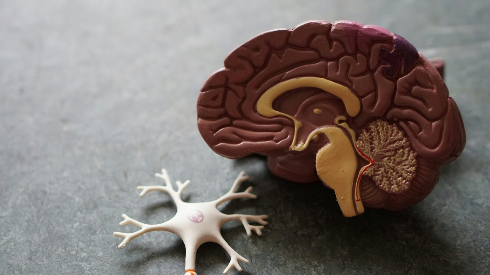

Mind-body counseling for chronic pain and stress · Nashville, TN
Your body keeps saying something is wrong. Let's listen to it together.
Maybe your tests came back normal, or maybe you have a diagnosis but treatment only helps so much. I help you understand your current pathways, how stress lives in your body and how your brain shapes it, then build new pathways in your brain that can gradually take over from the old ones.

Does this sound familiar?
You've probably been told, "Relax, it's just stress." But fighting stress often makes it stronger, leaving you frustrated and hopeless.
My mind-body approach
Your symptoms are real, and your brain plays a big part in them.
When stress or pain lasts a long time, the nervous system's alarm can become overprotective. Old patterns don't simply disappear, but your brain can build new ones that outcompete them. We work in three stages.
01
Understand
With a background in neuroscience, I explain what's happening in your brain and body in plain language, so your symptoms finally make sense.
02
Make room
Using ACT, mindfulness, and EMDR, you learn to make room for stress and discomfort instead of fighting it, and still do what matters to you.
03
Rebuild
Through small, values-guided steps, your brain builds new patterns, in your body and in your relationships, until they become your new default.
Stress and pain can wear a deep path in the brain. We honor that path while knowing your brain can build new connections. Each time you practice a new response, you strengthen a new path. Over time, it becomes easier to take, and when the old one shows up on hard days, you'll know how to find your way back.
Read more: why work with the brain? →
Pain is the brain's protective alarm, not a direct measure of damage. One famous case shows this clearly.
What happened. In 1995, the British Medical Journal described a 29-year-old builder who jumped down onto a 15 cm (6-inch) nail. It went straight through his boot. He was in so much pain that the emergency team gave him strong pain medication before carefully removing the boot. Underneath, they found the nail had passed between his toes. His foot was completely uninjured.
What it shows. His pain was real. But it came from his brain's judgment of danger, not from damage. The brain decides how much something hurts based on what we see, expect, and fear, not only on what is happening in our tissues.
Why it matters for you. The same alarm can stay switched on. When stress, worry, or past pain keeps it on high alert, it can keep sounding long after the body has healed. That's why we work with the brain: an alarm that has learned to be overprotective can also learn to settle.
Source: Fisher et al., 1995, British Medical Journal (via PainScience)
What I help with
Counseling for chronic pain, anxiety, and stress in Nashville
I work with individuals and couples, and telehealth is available.
Chronic pain
Ease the fear, frustration, and emotional weight of pain, and learn how the nervous system can turn it up or down.
Read more →Anxiety and stress
Stop fighting anxious thoughts and feelings, and build a calmer, steadier relationship with them.
Gut and body symptoms
Support for the stress side of IBS, reflux, headaches, and brain fog, alongside your medical care.
Read more →Burnout and perfectionism
For athletes, high achievers, and anyone whose body has been running on empty.
Read more →Relationships
Stress often shows up in our closest relationships. We work on conflict, communication, and intimacy.
Living between cultures
I welcome clients of all backgrounds, especially those navigating more than one culture.
About me
Hi, I'm Chenxi. I know this work personally.
As an athlete, I've lived with chronic pain, and as a recovering perfectionist, I've faced stress-related GI issues and burnout. Counseling, and understanding the neuroscience behind it, was my turning point.
Now I help others do the same: understand their brain and body, stop fighting themselves, and build lives they care about.
- Master's in counseling, Vanderbilt University
- Bachelor's in neuroscience, Oberlin College
- EMDR trained
- Four years of clinical practice with clients from diverse backgrounds
I am an Associate Licensed Professional Counselor, Mental Health Service Provider in Tennessee (associate license #7341). I practice at Full Circle Counseling of TN under the clinical supervision of Stephanie Grissom, MA, LPC-MHSP S.
For doctors, physical therapists, and acupuncturists
Counseling works best as one part of a whole-person plan. I'm glad to collaborate with your care, with your patient's consent, and to refer clients to you when your work is a good fit.
Fees
Care built around you, not insurance limits
Sessions are self-pay, so care can be tailored to your needs, and you have more privacy, since no insurance company is involved.
Not sure it fits your budget? Let's talk in a free consultation.
Common questions
Are you saying my pain is all in my head?
No. Your pain is real. The brain and nervous system play a big role in how pain is processed, and stress can turn up the volume. Working with that system can make a real difference, alongside your medical care.
Read more: what the research shows →
The mismatch between what scans show and what people feel isn't limited to one part of the body. Researchers see it in the back, the knees, the gut, and beyond.
Many people have structural changes and no pain. In a review of 3,110 people with no back pain, disc bulges showed up in 30% of 20-year-olds and 84% of 80-year-olds. In a review of 4,751 adults with no knee pain or injury, 43% of those 40 and older had cartilage damage and 19% had meniscus tears. The authors of both reviews concluded that many of these findings are a normal part of aging, not proof of the cause of pain.
Many people have pain and no matching damage. For the vast majority of people with low back pain, the specific source can't be identified. In knee arthritis, how bad an X-ray looks is only modestly linked to how much it hurts, and people with more pain than their X-rays suggest tend to have a more sensitized nervous system. In 2017, the International Association for the Study of Pain recognized "nociplastic pain": pain that comes from changes in how the nervous system processes signals, without clear tissue damage. Examples include fibromyalgia, irritable bowel syndrome, and many cases of chronic back pain.
What this means for you. Scans and tests are important for ruling out serious problems, but they don't tell the whole story. How much something hurts also depends on how sensitive your nervous system has become, and stress, sleep, and fear can turn that sensitivity up or down. That's the part counseling can help with, alongside your medical care.
Sources: Brinjikji et al., 2015; Culvenor et al., 2019; Hartvigsen et al., 2018; Finan et al., 2013; IASP definition of nociplastic pain
How is this different from regular talk therapy?
We still talk, but we also pay attention to your body and what your nervous system is doing. Many of the tools I use are grounded in neuroscience research, and you'll understand the science behind each one, which helps the changes stick.
Do you take insurance?
Sessions are self-pay and not billed to insurance. Many clients use HSA or FSA funds; check with your plan administrator about their rules. A sliding scale is available based on need.
Do you offer telehealth?
Yes, I offer telehealth through a HIPAA-compliant secure platform.
Learn more
Understanding the brain-body connection
I'd love to hear your story.
Reach out to schedule a free 15-minute consultation. I'll get back to you within 1–2 business days.
Phone: 615-823-1992
Email: chenxi_zhu2024@proton.me
If you are in crisis, please call or text 988, or call 911. This form is not monitored for emergencies.